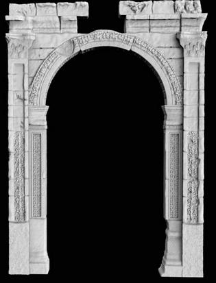

the museum revolution
On thing that miss to everyone in this period is visiting museums, but today's technologies permit to visit some virtual museums for free!
The best way to visit a virtual museum is to have a vr headset but this technology is not very developed. Anyway,you can visit a virtual museum with a computer and an internet connection.
You may think that a virtual museum is not as good as a real museum,that's true for now but those new types of museums getting better and better and you will enjoy visiting one.
The main question is "how is it possible to reproduce a museum?"and the answser is 3Dscanning
3D scanning
3D scans are made with scanners which calculate the distance from the object and reproduce it in 3D.
it permit to create a perfect virtual replica of any object.
A lot of objects are avalable for free thanks due to "scan the world" community
Scan the World is an ambitious community-built initiative whose mission is to share 3D printable sculpture and cultural artefacts using democratised 3D scanning technologies, producing an extensive ecosystem of free to download digital cultural heritage. In making culture accessible, communities are encouraged to share their scans, stories, and creations with the goal to bring tangible heritage to the masses. Share your stories with us at stw@myminifactory.com!
scan the world
This technology is also used to preserve old artifacts before they get distroyed.For example in Syria where scientist are scanning old monument which can be destroyed by the war.
scanning for syria

arch of triumph in Palmyra,Syria
For your first time you might want to use VrChat, it's a free platform where you can visit virtual museums and do a lot of other things.VrChat is easy to use,it's available on computers and vr headsets and it also permits to meet other users and discover a museum together!
so now you know more about it you can go for your first visit !
by Côme Cambien